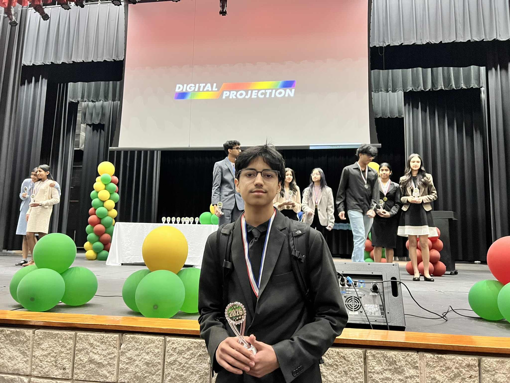
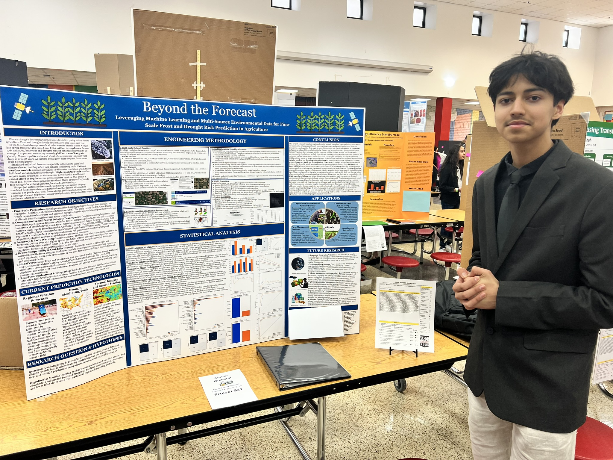

Qualifying for GSEF with Field-Scale Frost & Drought Forecasting
February 2026 · 8 min read
This year I took my science fair project—a high-resolution machine learning system for frost and drought forecasting—to my county fair and qualified for the Georgia Science and Engineering Fair (GSEF). It’s an achievement I’m really proud of, and I wanted to share what the project is, how the fair went, and how I hope to refine it before (and after) GSEF.


Why this project?
Frost and drought cause over $100 billion in global crop losses every year. Most forecast systems run at coarse scales (4 km or worse), so they miss the microclimate differences that actually decide whether a single field gets hit. They also tend to rely on sparse data, fixed thresholds, or expensive proprietary tools that small and mid-sized farmers can’t use.
My goal was to build an open-access, field-level system—predicting frost and drought at 10–30 m resolution—using a novel, drone-compatible dataset and robust ML models. Something that could improve early warning, spatial detail, and real-world usability for farmers and extension agents.
What I built
I created two complementary datasets: a tabular dataset (terrain, NDVI, soil moisture proxies, canopy temperature, weather) for interpretable models, and a raster dataset—time-aligned 2D sequences from Sentinel-2, GRIDMET, MODIS, SMAP, MERRA-2, and topography—for deep learning. Event labels used dynamic percentile thresholds so the system can generalize across different climates.
Models and results:
- Frost: XGBoost hit 0.977 AUROC with only a few features (min temp, NDVI, elevation); Random Forest was a strong baseline. Frost ended up >99.8% accuracy with minimal inputs.
- Drought: XGBoost (0.943 AUROC) beat a rule-based baseline (0.686). ConvLSTM (0.912 AUROC) captured multiday dynamics and vegetation stress better.
I used chronological walk-forward validation, early stopping, and bootstrap resampling so the results would hold up in real deployment. SHAP and ablation studies showed frost depends most on min temperature, NDVI, and elevation; drought on SPI-3, Soil Wetness Index, NDVI, and precipitation. I also built a bilingual (English/Spanish) Streamlit app with NDVI trends, field-level risk maps, and mobile-friendly, offline-capable workflows for low-bandwidth and drone use.
County fair → GSEF
At the county fair, judges were especially interested in the combination of high resolution, open data, and interpretability—and in the fact that the system is designed for smallholders and extension agents, not just research. Being selected to advance to GSEF felt like a big validation of the problem choice and the direction of the work.
I’m excited to present the same core story at GSEF: an open-access, field-scale forecasting system that combines satellite and drone-scale inputs, transfer learning with ConvLSTM, and a fully interpretable feature pipeline—aimed at real deployment for farmers and crop insurance.
How I hope to refine it
Before and after GSEF, I want to push the project in a few concrete directions:
- Lead time: Extend forecast windows so farmers get earlier warnings (e.g., 7–14 days) without losing accuracy.
- More regions: Test on additional geographies and cropping systems to stress-test generalization and document where the model works best.
- ConvLSTM for frost: Frost is already very accurate with tabular models; I’d like to add a spatiotemporal ConvLSTM path for frost too and compare smoothness and multi-day behavior.
- Calibration and uncertainty: Add proper probability calibration and uncertainty estimates (e.g., prediction intervals) so users know when to trust the forecast.
- App and outreach: Improve the Streamlit app (e.g., faster loads, clearer risk tiers) and share it with extension agents or a small farmer group to get real feedback.
Qualifying for GSEF was a big milestone. I’m treating it as a stepping stone to make this project more robust, more useful, and more deployable—and I’ll keep iterating based on what I learn at the fair and from anyone who tries the system.
Project link
You can read more about the technical details, datasets, and results on my Frost & Drought Prediction with ML project page.